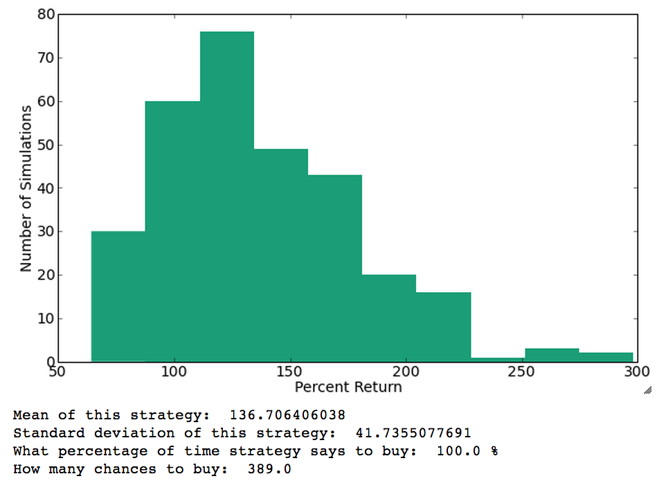

Linear Regression Model
So, they embarked on this project. The hypothesis was that the stock prices for a company for each day of the previous week, along with the Google search popularity of that company's name will give us some clues about how the stock will perform on the following Monday. The idea was so crazy it just might work.
After downloading all the search data from Google and the stock price data from Yahoo for Apple Corporation, SKY began to try to predict the stock movement of Apple's stock from week to week.
Results and Conclusions
Predicting the Future is Possible... To an Extent.
SKY performed a multiple linear regression with the Mon - Fri stock price data with the Mon - Sun Google Trend data from that week as the predictors and the stock price on the following Monday as the outcome. Each of the stock prices used were calculated to be a percentage of the highest stock price from that week. That is, the value for Monday's stock was calculated as: (Monday's raw stock price) / (max raw stock price from previous week) * 100. For example, if the highest stock price from the previous week was $324.54 and Monday's stock price was $335.84, the calculated "normalized" price for Monday was 103.48. The prices for each day from the previous week was also similarly normalized.
They first found that, given any specific week, they were able to predict fairly reliably how the stock price on Monday close was going to perform compared to the max price during the past week week.
Note that the closer the points to the line, the better the predictor. Wow, what a result! Now that they are armed with something that could pretty accurately predict stock prices, they explored to see which part of their data was more helpful: Google Trend, or past stock prices.
Google Trend Data Alone Cannot Predict Stock Price, But Is Useful
SKY took the past week's stock price data out of the analysis and used only Google Trend data to try to predict the stock movement. The result is as follows:
Ooh, it looks like only using Google Trend data to predict stock movement is pretty futile, as the points are pretty scattered. What if only the past week's stock data was used for analysis?

Once again, the points hugged the line. From these visualizations, it seems that Google Trend data was useless in trying to predict stock price on the following Monday. Indeed, it may be safe to conclude that the price data was MORE useful, but this does not prove anything. So, the team ran an F-test, testing the differences between the model that uses Google Trend data and the model that does not. The test undoubtedly shows that the Google Trend data DID help with the predictions (with a p-value of 0.00059). So our original hypothesis that Google Trend data helps is not invalidated, but the power of the data seems limited.
Predicting the Future From a Different Perspective Can Be Harder
Remember how the team had normalized prices based on the max price over the past week? That is, they predicted the stock price on the following Monday as a comparison to the to whatever day during the week happened to be highest. But that's probably not most useful. If an investor is buying stock on Friday, he wants to know what the price on Monday will be compared to Friday's price. There's no such thing as retroactively buying stock with Wednesday's price, for example!
So, instead of using the max price from the previous week as the normalizing price, SKY instead used Friday's price from the previous week and reran the analysis. They were disappointed to see the following result:
What happened to the beautiful visualization from the previous part? Not to give up so easily, they instead used Monday's stock price as the normalizing price:

Wow! SKY's predictions are so amazingly accurate when normalizing prices according to Monday's price, but so terrible when normalizing against Friday's price! This made no sense... However, SKY quickly realized that it was because predicting the relative price on the following Monday compared to the previous Monday's price was much easier than predicting the relative price compared to the previous Friday's price -- and much less useful (most of the change between one Monday to another happens through the week!). The same kind of story could be said about using the max price as the normalizing price.
The model isn't useless: after all, more information about the future is always better than less information! However, the usefulness of this information must be questioned: if this model is simply predicting the following Monday based on the patterns it sees the previous week, it's not necessarily too interesting to an investor, as the investor must buy the stock at the end of the week. He cannot retroactively buy the stock at the previous Monday's price! He's more interested in how the stock changes between Friday and Monday in order to actually apply the model.
Predicting the Future From a Different Perspective Can Be Harder
Remember how the team had normalized prices based on the max price over the past week? That is, they predicted the stock price on the following Monday as a comparison to the to whatever day during the week happened to be highest. But that's probably not most useful. If an investor is buying stock on Friday, he wants to know what the price on Monday will be compared to Friday's price. There's no such thing as retroactively buying stock with Wednesday's price, for example!
So, instead of using the max price from the previous week as the normalizing price, SKY instead used Friday's price from the previous week and reran the analysis. They were disappointed to see the following result:
What happened to the beautiful visualization from the previous part? Not to give up so easily, they instead used Monday's stock price as the normalizing price:
Wow! SKY's predictions are so amazingly accurate when normalizing prices according to Monday's price, but so terrible when normalizing against Friday's price! This made no sense... However, SKY quickly realized that it was because predicting the relative price on the following Monday compared to the previous Monday's price was much easier than predicting the relative price compared to the previous Friday's price -- and much less useful (most of the change between one Monday to another happens through the week!). The same kind of story could be said about using the max price as the normalizing price.
The model isn't useless: after all, more information about the future is always better than less information! However, the usefulness of this information must be questioned: if this model is simply predicting the following Monday based on the patterns it sees the previous week, it's not necessarily too interesting to an investor, as the investor must buy the stock at the end of the week. He cannot retroactively buy the stock at the previous Monday's price! He's more interested in how the stock changes between Friday and Monday in order to actually apply the model.
Can We Make Money?
Below is a representation of the percent return on investment one would expect if one always decides to buy the stock on Monday morning and sell at night.
Not bad to expect a 138% average return on investment! However, these companies that we analyzed were Apple, Microsoft, Motorola, Amazon, and HP, and so they've all done well, historically. This says nothing about the future though, so don't go buying all the stocks without weighing your risk appetite!
Then, using our model and a buying and selling strategy, we were able to achieve the following returns and on average make 20% more!
Not bad! Can we make it rain cash?